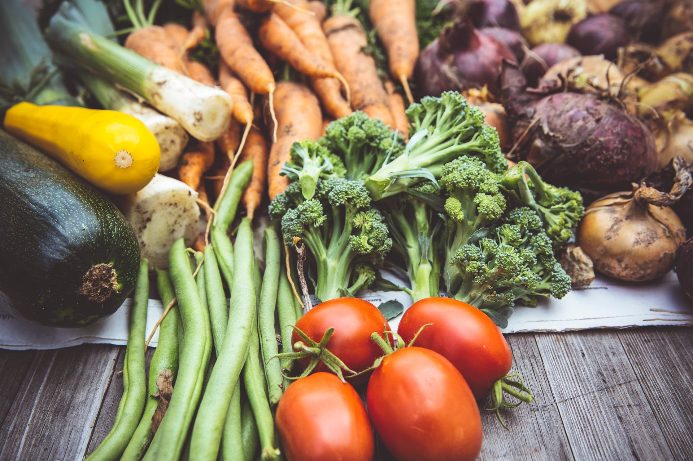

Challenge
How to make food production sustainable


Globally ⅓ of all the food is thrown out. 385 000 tons of edible food was discarded
in 2017 in Norway by the food industry, grocery stores, and regular consumers. This
number does not include stakeholders that have not been mapped out, such as farmers.
The food industry has strict standards for how they want the produce they sell to look. This has
created an expectation of what vegetables are supposed to look like and for example that every
carrot is the same length and size. A direct consequence is that vegetables of strange sizes or forms
are discarded at packing centers and instead used for animal feed.


The Norwegian Directorate for Education and Training is currently in the process of implementing new
competence goals for Norwegian schools. There is an increased focus on sustainability, especially for
older students. Already in 4th-grade, students should be able to take advantage of local food and be aware
of the different steps from food item to meal in the production chain. Later on, students should also be
able to fully utilize food items as well as leftovers from cooking.
The student’s individual choices and their impact is another important topic covered in the new
competence goals. To critically evaluate information about food production, explore food item’s climate
impact, and understand how consumer power can impact local and global food production are fundamental
elements of this.
A study conducted by Statistics Norway reveals that as few as 4 out of 10 who teach Food
and Health have education in the subject. The statistics are even worse for elementary schools,
where 8 out of 10 lack education within the field.
"The comapnay" goal is to help UN to achive the following goals.